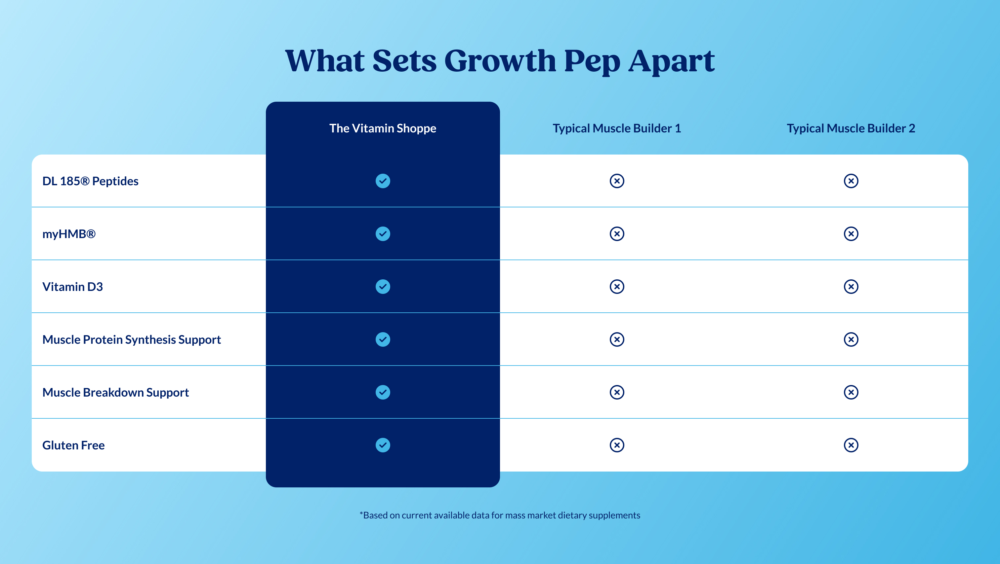

Platter component
Comparison Table
Transcribed from Confluence, authored by Sarah Lee. It is the client's spec, reproduced verbatim in substance. Where our implementation deviates it is recorded under Deviations, not by editing the spec.
Spec: https://getplatter.atlassian.net/wiki/spaces/TVS/pages/940605483/FSD+Comparison+Table
02 — Screenshots
How it renders
Wipe the handle across the design to find where the build drifts from it. The Figma frame and the capture are exported at the same width, so anything that moves under the handle is a real difference. Every width is below as a plain capture.



03 — Fields
What a merchandiser fills in
Generated from _schema.ts, in the order Amplience shows them.
| Field | Type | Constraints | Description | |
|---|---|---|---|---|
headingHeading |
string | required | max 70 min 1 |
The headline above the table, e.g. "What Sets Growth Pep Apart". Wrap words in _underscores_ for italic and **double asterisks** for bold. Write ~12~ for subscript; a registered mark (®) is raised automatically, and a plain asterisk is never formatting. It is centred and wraps to a second line rather than shrinking, and the table below is unaffected. The spec asks for 30 to 70 characters; anything past 70 will not save. |
headingLevelHeading level |
string | h1 · h2 · h3default "h2" |
Choose h1 only if this module is the first thing on the page and no other h1 exists. Otherwise leave it as h2 — two h1s on one page hurts SEO. Choose h3 when the module sits underneath a section that already has an h2, so the page's heading order stays unbroken. This changes nothing you can see: the size is set separately below. | |
headingSizeHeading size (desktop / mobile) |
string | 64px / 38px · 56px / 34px · 48px / 30px · 36px / 24px · 28px / 20px · 20px / 16pxdefault "48px / 30px" |
A fixed pair from the TVS type scale — the first size applies from tablet up, the second on phones. 48px / 30px is the design. The table's own text does not move with this, so dropping to 20px / 16px leaves the headline smaller than the attribute labels underneath it. | |
headingFontHeading font |
string | Lato · corisanderegular · Fieldsdefault "Fields" |
Fields is the serif this module is designed in and is the default. It is not yet installed on vitaminshoppe.com, so until it is, the heading falls back to Georgia — still a serif, but not the exact drawn face. Pick Lato if you would rather the heading match the rest of the site exactly than approximate the design. | |
ourColumnLabelOur column heading |
string | required | max 30 min 1 |
The name over The Vitamin Shoppe's column, e.g. "The Vitamin Shoppe". It is always required, even when you upload a logo below, because it is what a screen reader announces for every cell in that column. Keep it under about 30 characters — the column is narrow on a phone and wraps to two lines. Formatting: **bold**, _italic_, and ~12~ for subscript. A registered mark (®) is raised automatically, and a plain asterisk is never formatting. |
ourColumnLogoOur column logo |
string | max 500 | Full URL of a logo to show instead of the heading text above. Any image type works. It is scaled to fit the header cell, which is 80px tall, so supply a mark with its own transparent padding rather than one that fills the file edge to edge. The heading text is still used to describe it, so a shopper using a screen reader hears the name either way. Leave empty to show the text. | |
competitorsCompetitor columns |
array | required | Between one and three competitors, shown left to right in the order you list them here. Drag a row to reorder it. Every attribute row below must carry one cell per competitor in this same order, so adding a competitor here means adding a cell to every row — the table simply leaves the cell empty otherwise. Desktop shows every column at once; a phone pins the attribute and Vitamin Shoppe columns and scrolls the rest. | |
rowsAttribute rows |
array | required | Between three and six rows, shown top to bottom in the order you list them here. Drag a row to reorder it. Each row is one attribute, then our cell, then one cell per competitor in the same order as the Competitor columns above. Write attributes a shopper would compare on — an ingredient, a claim, a certification — rather than anything that needs a number to make sense, because a cell can only be a check or a cross. | |
disclaimerDisclaimer |
string | max 160 | The legal line under the table, e.g. "*Based on current available data for mass market dietary supplements". The spec asks for 60 to 160 characters. It is centred and set small, and a plain asterisk stays a plain asterisk, so a footnote marker is safe to use. Formatting: **bold**, _italic_, and ~12~ for subscript. A registered mark (®) is raised automatically, and a plain asterisk is never formatting, so a footnote marker like 20%* is safe. Leave empty to hide it. | |
ourColumnColorOur column colour |
string | The block of colour behind The Vitamin Shoppe's column. #012169 is the design. Our column heading is always white and the tick inside each check is knocked out of the circle rather than drawn on top, so it shows this colour — pick something dark enough that white reads against it, or both the heading and every tick will disappear. Leave empty to keep the design. | ||
backgroundStyleModule background |
string | gradient-blue · light-blue · pale-blue · whitedefault "gradient-blue" |
The colour behind the whole module. Blue gradient is the design default. The other three are flat colours for pages that already have a lot of blue. Every option here has been contrast-checked against the navy heading and the navy disclaimer, so prefer one of these — the two fields below override it and are not checked for you. | |
backgroundColorModule background colour (overrides the preset) |
string | One flat colour of your choosing, used instead of the preset above. The heading and the disclaimer are always navy #012169, so pick something light: a mid or dark colour leaves both unreadable and fails the accessibility standard this page is held to. Leave empty to keep the preset. | ||
backgroundGradientCustom gradient (advanced, overrides both) |
string | max 300 | A CSS gradient, used instead of both settings above. Copy the shape of the design's own: linear-gradient(-57deg, #41b6e6 0%, #b9eafd 100%) — an angle, then each colour with the position it reaches. Full syntax and more examples: https://developer.mozilla.org/en-US/docs/Web/CSS/gradient/linear-gradient. The same navy-text warning applies. A value the browser cannot read is ignored and the preset comes back, so always load the page after saving. Background images are not accepted here. | |
sectionIdSection ID |
string | max 50^[a-z][a-z0-9-]*$ |
A name for this specific module, used for two things. A link anywhere on the site can jump straight to it by ending the URL with # and this name, e.g. #why-growth-pep. Page-level CSS can also target this one module rather than every Comparison Table. Use lowercase letters, numbers and hyphens, start with a letter, and make it unique on the page — two modules sharing an ID will break the jump link. Leave empty if you need neither. |
04 — Sample content
A filled-in example
From _content.json. This is what the screenshots above are rendering.
{
"heading": "What Sets Growth Pep Apart",
"headingLevel": "h2",
"headingSize": "48px / 30px",
"headingFont": "Fields",
"ourColumnLabel": "The Vitamin Shoppe",
"competitors": [
{
"name": "Typical Muscle Builder 1"
},
{
"name": "Typical Muscle Builder 2"
}
],
"rows": [
{
"attribute": "DL 185® Peptides",
"ourValue": "check",
"competitorValues": [
{
"value": "cross"
},
{
"value": "cross"
}
]
},
{
"attribute": "myHMB®",
"ourValue": "check",
"competitorValues": [
{
"value": "cross"
},
{
"value": "cross"
}
]
},
{
"attribute": "Vitamin D3",
"ourValue": "check",
"competitorValues": [
{
"value": "cross"
},
{
"value": "cross"
}
]
},
{
"attribute": "Muscle Protein Synthesis Support",
"ourValue": "check",
"competitorValues": [
{
"value": "cross"
},
{
"value": "cross"
}
]
},
{
"attribute": "Muscle Breakdown Support",
"ourValue": "check",
"competitorValues": [
{
"value": "cross"
},
{
"value": "cross"
}
]
},
{
"attribute": "Gluten Free",
"ourValue": "check",
"competitorValues": [
{
"value": "cross"
},
{
"value": "cross"
}
]
}
],
"disclaimer": "*Based on current available data for mass market dietary supplements",
"backgroundStyle": "gradient-blue",
"sectionId": "comparison-table"
}05 — Design reference
Design reference
The FSD's own Design Reference link points at 18309:80054, a single desktop frame in the page composition. The consolidated section 18487:36976 holds the four frames the section is measured against — a desktop and a mobile of each column-header treatment — and 18309:80054 is identical to the logo desktop.
| View | Frame | Size |
|---|---|---|
| Section — desktop, text headers | Figma 18476:36749 | 1512 × 854 |
| Section — desktop, logo headers | Figma 18476:36526 | 1512 × 854 |
| Section — mobile, text headers | Figma 18487:36878 | 375 × 777 |
| Section — mobile, logo headers | Figma 18476:36611 | 375 × 777 |
| Section — desktop, in the page composition | Figma 18309:80054 | 1512 × 854 |
The text pair is what _figma-desktop.jpg and _figma-mobile.jpg are exported from, because _content.json uses text headers: the logo treatment needs two uploaded brand marks the preview has no offline copy of.
Section shell
| Desktop | Mobile | |
|---|---|---|
| Background | linear gradient, #41b6e6 → #b9eafd | same stops |
| Gradient angle | −57.2° | −27.7° |
| Padding | 48px sides, 64px top and bottom | 24px sides, 40px top and bottom |
| Content width | 1416px (1512 − 96) | 327px (375 − 48) |
| Stack gap | 32px | 24px |
| Heading | Fields Bold 48px / 1.2, centred, #012169 | Fields Bold 30px / 1.2, centred |
| Disclaimer | Lato Regular 14px / 1.4, centred, #012169 | Lato Regular 12px / 1.4, centred |
The two gradient angles are one corner-to-corner gradient measured on two aspect ratios, not two design decisions: bottom-right to top-left on 1512 × 854 is −60.5° and on 375 × 777 is −25.8°, which brackets both drawn values. The heading pair 48 / 30 is the headingSize default, and the face is Fields, so base.css already carries the --_heading-font declaration this section needs.
Table
| Desktop | Mobile | |
|---|---|---|
| Columns drawn | 4 — label, ours, 2 competitors, 354px each | 3 — label, ours, 1 competitor, 109px each |
| Header row | 80px | 80px |
| Value rows | 6 × 80px | 6 × 70px |
| Cell padding | 16px | 8px |
| Cell gap | 6px | 4px |
| Corner radius | 16px | 10px |
| Row rule | 1px #41b6e6, bottom edge, last row bare | 1px #41b6e6, bottom edge |
| Attribute label | Lato Bold 18px / 1.5, left | Lato Bold 12px / 1.4, left |
| Column header | Lato Bold 18px / 1.5, centred | Lato Bold 12px / 1.4, centred |
Columns are equal flex: 1 0 0 in every frame, so 354 and 109 are consequences of the column count rather than fixed widths: three competitors on desktop makes five columns of 283.2px. The top-left header cell is empty in all four frames — no fill, no border, no children.
The featured column
Ours is the second column. It is marked by a #012169 fill on the column root rather than on its values band, so the dark runs the full height including the 80px header and the bottom padding, and by a radius on all four corners where its neighbours are rounded on their outer edges only. Its values band is transparent; every other column's is #ffffff. There is no shadow, no extra height and no extra padding — the lift is entirely the fill running past the bands either side of it.
Icons
Both are 24 × 24 on a 0 0 24 24 viewBox and identical across all four frames.
| Fill | Stroke | |
|---|---|---|
| check-circle | #41b6e6, fill-rule: evenodd | none |
| x-circle | none | #012169, 2px, round cap and join |
check-circle is a filled disc with the tick knocked out by the even-odd rule, so the tick shows whatever is behind it — #012169 on the featured column. It must not be drawn as a second shape in a second colour.
06 — User requirement
User requirement
- User can view the table.
- On mobile, user can scroll horizontally; the attribute label and Vitamin Shoppe's own column stay fixed while competitor column(s) scroll.
07 — Admin requirement
Admin requirement
| Content Type | Functional Requirement | Character count | Asset/Copy Requirement | Responsive & Content Behavior |
|---|---|---|---|---|
| Background (Required) | Admin sets a flat color or gradient background for the module. | - | - | - |
| Headline (Required) | Admin edits the section heading. | 30-70 | - | - |
| Attribute Row (Required, 3–6) | Admin defines each row: attribute label, our value, and 1–3 competitor values, each cell set as check or cross. | 10-50 | Copy fields need to support a superscript character for trademark registration marks (®), since many ingredient/brand names in this table are registered. Confirmation pending. | - |
| Column Headers (Required) | Admin edits competitor brand/column header labels. | - | Logo is uploaded image fil (any types of image file is supported) | - |
| "Ours" Column Color (Required) | Admin can edit the dark-blue accent color used for Vitamin Shoppe's column, so it stays legible against whatever background is chosen and checkmark contrast is preserved. | - | - | - |
| Check/Cross State (Required) | Admin sets the state (check / cross) per cell. | - | - | - |
| Disclaimer (Optional) | Admin edits the legal disclaimer copy shown with the table. | 60-160 | - | - |
| Mobile Scroll Behavior | First two columns (attribute + our column) stay fixed; remaining competitor column(s) scroll horizontally. | - | - | Mobile-only behavior; desktop shows all columns without scrolling. |
The Character count and Asset/Copy cells are a literal dash in the source wherever this table shows one. "Logo is uploaded image fil" is the source's own spelling.
08 — Other requirements
Other requirements
- Analytics: Component supports automated impression tracking (viewport entry) via the standard
raiseEventhandler. - Open item: Superscript/basic-HTML-tag support in the rich-text editor is unconfirmed as of the Aug 6 review — do not commit to this until Platter confirms with engineering.
09 — Open comments
Open comments
The rows carry the values, so a row is the authoring unit — answered 2026-08-27
answered 2026-08-27
The Admin requirement writes the row as "attribute label, our value, and 1–3 competitor values", which is one self-contained unit per row rather than a values list hanging off each column. That settles a shape the design cannot: rows is a repeater whose item holds the label, our cell, and a nested repeater of competitor cells, and columns carries only the headers. Answered by the spec, not by us.
The mobile table keeps every competitor and scrolls — answered 2026-08-27
answered 2026-08-27
Both mobile frames draw exactly three columns in 327px with no overflow, and a 327 × 3 scroll thumb beneath them whose 21.5% width matches nothing about this table, so the design alone could be read either as "mobile drops a competitor" or as "mobile scrolls". The User requirement and the Mobile Scroll Behavior row both answer it: every column is kept and the competitors scroll, with the attribute and ours columns pinned. The drawn mobile frame is therefore the one-competitor case, which happens to fit exactly.
A value cell may only be a check or a cross — answered 2026-08-27
answered 2026-08-27
Every one of the 24 value cells across the four frames carries a hidden text node behind its icon, which reads as a component that also supports a written value ("500mg" rather than a tick). The Admin requirement is explicit twice — "each cell set as check or cross" and a Check/Cross State row reading "Admin sets the state (check / cross) per cell" — so the cell is binary and the text node is an unused variant of the design-system component. Not built. Raised because it is cheap to add later and the design already anticipates it.
The mobile row rules are inconsistent in the file — answered 2026-08-27
answered 2026-08-27
On desktop every column drops the bottom rule on its last row. On mobile only the featured column does: the label column and the competitor column carry a rule on all six rows, so a hairline sits under the white band's rounded bottom corners. Read as a Figma authoring slip rather than intent, and implemented the desktop way at both widths — one rule between rows and none after the last.
The heading character range vs the shared 90-character limit — unanswered 2026-08-27
unanswered 2026-08-27
The headline is specified as 30-70 characters. Every other heading in the library carries the shared 90-character cap from schema/vocabulary.ts. The upper bound is applied as the field's maxLength; the lower bound is not enforced, because a short, correct heading would otherwise fail to save. The same question is open on Feature Tiles. The heading drawn in the design, "What Sets Growth Pep Apart", is 25 characters and is already under the stated floor.
Column Headers has no character count — unanswered 2026-08-27
unanswered 2026-08-27
The Admin requirement gives a range for the headline, the attribute label and the disclaimer, and a dash for the column header. The header cell is 354px wide on desktop and 109px on mobile with the type at 12px, so it is the tightest box in the module and the one most in need of a cap. A limit is applied from the drawn copy rather than from the spec — confirm it.
Superscript and rich-text support is unconfirmed — unanswered 2026-08-27
unanswered 2026-08-27
Carried straight from the source's own Open item and its Asset/Copy note on the Attribute Row. Our prose scope already raises a bare ® into a <sup> and supports **bold**, _italic_ and ~12~, which covers what the note asks for, so nothing is blocked. Flagged because the client expects to confirm it with engineering before it is committed to.
Impression tracking has no agreed event — unanswered 2026-08-27
unanswered 2026-08-27
Other requirements asks for automated impression tracking on viewport entry via "the standard raiseEvent handler", but no impression event name appears in any TVS template or in TVS-Common. The same question is open on Slim Hero Banner A, Hero Banner, Expert Module, Bundle Module, FAQ, Benefits Highlight and Feature Tiles. It should be answered once for every module rather than invented separately here.
10 — Deviations
Deviations
Impression tracking is not implemented
Not built
Other requirements asks for "automated impression tracking (viewport entry)". No impression event name exists to call, so nothing ships. This matches every section built so far — impression analytics is an open item across the whole project, first raised in the Slim Hero's FSD, and it should be solved once for all modules rather than invented separately in this one.
The heading's lower character bound is not enforced
Built
The spec gives the headline as 30-70 characters. maxLength is set to 70; there is no minLength beyond the shared 1 that makes the field required. A 30-character floor would reject the heading the design itself draws, and Amplience surfaces a failed minimum as a save error rather than a warning.
The logo has no alt text of its own
Built
Every other repeater image in the library is an image / imageAlt pair. A column logo is not a picture with something of its own to describe: it is the column heading rendered as a mark, so its alt must equal that heading by definition. A second field could drift and announce a different brand than the header claims. The heading is therefore required whether or not a logo is uploaded, and it is what a screen reader gets either way.
A column logo is contained inside its header cell
Built
The design's own TVS logotype is 165 × 61 in an 80px header cell with 16px padding, absolutely positioned so it overflows the padded box; the GNC marks are 112 × 32 and do not. A merchandiser-uploaded file has no such per-asset placement, so every logo is contained at 36px on phones and 48px on desktop. The drawn TVS logotype therefore renders smaller than the frame shows it.
A cross in our own column is drawn white, not navy
Built
Both icons take currentColor rather than the drawn #41b6e6 and #012169. The check is unchanged at either width — it is the light blue everywhere the design puts it. The cross is not: no frame draws one in our own column, because every drawn row has us winning, and the navy the design gives it would be invisible on the navy fill. It is white there and navy everywhere else. The same reasoning covers a merchandiser who recolours the column.
The table is built from ARIA roles rather than table elements
Built
role="table" / "rowgroup" / "row" / "columnheader" / "rowheader" / "cell" on div elements, laid out as one CSS grid per row. base.css § TVS page-frame records that their header stylesheet styles bare elements under .site-wrapper at (0,1,1), which beats every utility and every one-class component rule we are permitted to write; it has already taken <p> and <button>. Whether it also styles table, th or td cannot be measured from here, and a table is the one structure where silently losing padding, height or border would wreck the whole module rather than one element. The roles carry the same semantics and no element selector can reach them. Every value cell also carries its own visually hidden wording, since an icon alone announces nothing.
On phones the attribute column's header cell is filled
Built
The design draws the top-left cell empty at both widths. On phones that column is pinned while the competitors scroll under it, and a pinned cell with no fill of its own lets the scrolling content show through — what passes that corner is the competitor headings. The cell takes the white of its own column, and the band's top-left corner moves up to it. Desktop is unchanged: nothing scrolls there, so the cell stays empty as drawn.
A registered mark is raised; the design leaves it on the baseline
Built
The design sets "DL 185® Peptides" and "myHMB®" with the ® full-size on the baseline. Every prose field in this library runs through the shared richText scope, which lifts a bare ® into a <sup> automatically, so both labels render it raised and about 5px narrower than the frame. This follows the spec over the design deliberately: the Attribute Row's own Asset/Copy requirement asks for "a superscript character for trademark registration marks (®), since many ingredient/brand names in this table are registered". Changing it here would also mean diverging from every other section.